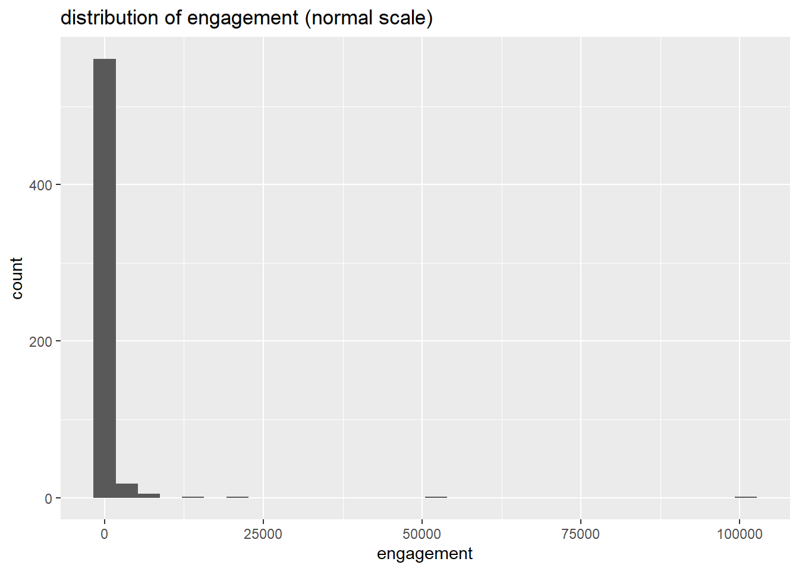

Rows: 603 Columns: 75
── Column specification ────────────────────────────────────────────────────────
Delimiter: ","
chr (60): series_name, network, season, title, imdb, engagement, format, mo...
dbl (5): index, run_time, monster_amount, suspects_amount, culprit_amount
lgl (9): unmask_other, caught_other, caught_not, door_gag, batman, scooby_...
date (1): date_aired
ℹ Use `spec()` to retrieve the full column specification for this data.
ℹ Specify the column types or set `show_col_types = FALSE` to quiet this message.
# distribution of imdb, engagementscoobydoo |>filter(engagement !="NULL") |>ggplot(aes(x=as.numeric(engagement)))+geom_histogram()+labs(title ="distribution of engagement (normal scale)",x="engagement")
`stat_bin()` using `bins = 30`. Pick better value `binwidth`.

scoobydoo |>filter(engagement !="NULL") |>ggplot(aes(x=as.numeric(engagement)))+geom_histogram()+scale_x_log10()+labs(title ="distribution of engagement (log scale)",x ="log(engagement)")
`stat_bin()` using `bins = 30`. Pick better value `binwidth`.
# Run linear regression with guest characters as predictorsmodel <-lm(imdb ~ batman + blue_falcon + hex_girls + scooby_dum + scrappy_doo, data = model_data)
# Summarize regression results (shows coefficients, model fit, significance)summary(model)
Call:
lm(formula = imdb ~ batman + blue_falcon + hex_girls + scooby_dum +
scrappy_doo, data = model_data)
Residuals:
Min 1Q Median 3Q Max
-3.15698 -0.25698 0.04302 0.34302 2.24302
Coefficients:
Estimate Std. Error t value Pr(>|t|)
(Intercept) 7.35698 0.03706 198.493 < 2e-16 ***
batman 0.21802 0.36009 0.605 0.5451
blue_falcon -0.64860 0.13440 -4.826 1.78e-06 ***
hex_girls 0.29302 0.29479 0.994 0.3206
scooby_dum -0.12520 0.18343 -0.683 0.4952
scrappy_doo -0.15516 0.06696 -2.317 0.0208 *
---
Signif. codes: 0 '***' 0.001 '**' 0.01 '*' 0.05 '.' 0.1 ' ' 1
Residual standard error: 0.7164 on 582 degrees of freedom
Multiple R-squared: 0.05171, Adjusted R-squared: 0.04356
F-statistic: 6.347 on 5 and 582 DF, p-value: 9.454e-06
# Obtain confidence intervals for the coefficients (for inference)confint(model)